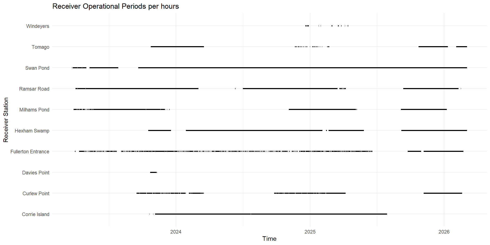
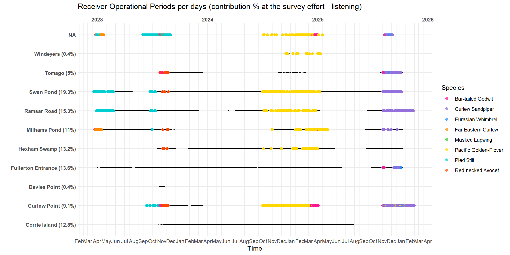

library(dplyr)
library(here)
library(forcats)
library(ggplot2)
library(lubridate)
library(tidyr)
library(purrr)Survey effort
Activity table
Load your data in your R environment - see Load & Format > Reproducibility
Let’s call this famous activity table.
recv.act <- tbl(sql.motus, "activity") %>%
collect() %>%
as.data.frame() %>%
rename(deviceID = "motusDeviceID") %>%
# keep our deployed antennas only
filter(deviceID %in% unique(recv$deviceID)) %>%
# Set the time properly - IMPORTANT
mutate(date = as_datetime(as.POSIXct(hourBin* 3600,
origin = "1970-01-06",
tz = "UTC")),
dateAus = as_datetime(as.POSIXct(hourBin* 3600,
origin = "1970-01-06",
tz = "UTC"),
tz = "Australia/Sydney")) head(recv.act) batchID deviceID ant hourBin numTags pulseCount numRuns numHits run2 run3
1 21275568 3596 1 471533 1 20 1 9 0 0
2 21275568 3596 1 471534 0 46 0 NA 0 0
3 21275568 3596 1 471535 0 79 0 NA 0 0
4 21275568 3596 1 471536 0 8 0 NA 0 0
5 21275568 3596 1 471537 0 23 0 NA 0 0
6 21275568 3596 1 471538 0 6 0 NA 0 0
run4 run5 run6 run7plus numGPSfix date dateAus
1 0 0 0 1 NA 2023-10-22 05:00:00 2023-10-22 16:00:00
2 0 0 0 0 NA 2023-10-22 06:00:00 2023-10-22 17:00:00
3 0 0 0 0 NA 2023-10-22 07:00:00 2023-10-22 18:00:00
4 0 0 0 0 NA 2023-10-22 08:00:00 2023-10-22 19:00:00
5 0 0 0 0 NA 2023-10-22 09:00:00 2023-10-22 20:00:00
6 0 0 0 0 NA 2023-10-22 10:00:00 2023-10-22 21:00:00Here above is displayed an overview of the activity table. This object is composed of multiple elements but four are keys:
pulseCount: Quantifies the number of radio pulses measured on each antenna over each hour periodhourBinbut does not necessary correspond to a known VHF tag detection. It can be any other VHF signal, even simple noise - documentationnumTags: Represents the total number of unique tags detected. This, given a context, as typically a specific site, or within a batch, or for a set of detections.deviceID: Raspberry Pi processor ID. A small electronic part of the receiver that plays the role of an embarked computer.ant: Port of antenna theactivityhas been recorded.
How the data are recorded in this table?
Two cases may occur:
When a station is listening, the table has either values or NA for
pulseCountor/and fornumTagsvariables. For example:No noise has been recorded but one or several tags have been recorded:
pulseCount= 0 or is NA andnumTags> 1No tag has been recorded but noise happened:
pulseCount> 0 andnumTags= 0 or is NA
When a station is not listening, there is no row at all in the table (no data recorded).
Keep in mind we can miss the hours where no tag or noise are happening within the environment BUT the antenna is still operational and being “listening”. In such a case, let’s further assume than the antenna is not working or listening. Indeed, an environment with “no noise” condition during more than an hour may be extremely rare and very unlikely.
table(is.na(recv.act$pulseCount), recv.act$numTags)
0 1 2 3 4 5 6 7
FALSE 108638 5127 975 404 193 95 34 17
TRUE 12673 122 21 3 1 2 0 0Receiver ID
One issue with Motus data is the number of variables related to IDs (receivers, Raspberry Pi, sites, etc.) and the inconsistent use of names for the same variable across the different tables (i.e. recv$serno = data_all$recv).
Plus, some of our SensorGnome serno and/or Raspberry Pi processor deviceID have been swapped around stations to optimise the VHF survey.
For example, when two stations need receiver repairs, we fix the easiest one first and prioritise reinstalling it at the most important station regardless the receiver or Raspberry origin. This sometimes means taking a receiver or Raspberry from one station and moving it to another one, but because Motus attaches this Raspberry ID deviceID to a Motus station name recvDeployName, messy error may happen.
We must re-associate each deviceID with their corresponding recvDeployName and at the correct hourBin. We first create a unique ID that matches station’s name with Raspberry pi that we called SernoStation.
# Sort the terminated serno (if terminated, ie. one box has been removed from one antenna site, and a date comes along recv$timeEndAus variable)
recv.act.term <- recv.act %>%
left_join(recv %>%
filter(!is.na(timeEndAus)) %>%
select(deviceID, serno, recvDeployName),
"deviceID") %>%
filter(!is.na(recvDeployName)) %>%
mutate(SernoStation = paste0(recvDeployName, "_", serno))
# Sort the still currently running serno
recv.act.runn <- recv.act %>%
left_join(recv %>%
filter(is.na(timeEndAus)) %>%
select(deviceID, serno, recvDeployName),
"deviceID") %>%
filter(!is.na(recvDeployName)) %>%
mutate(SernoStation = paste0(recvDeployName, "_", serno))
# Merging in one data-set to use Station's name further + pick-up the rounded hours
recv.act <- bind_rows(recv.act.runn, recv.act.term) %>%
mutate(hour_dt = floor_date(dateAus, "hour"))
# Providing helpful variables
recv <- recv %>%
mutate(SernoStation = paste0(recvDeployName, "_", serno),
lisStart = timeStartAus,
lisEnd = if_else(
is.na(timeEndAus), # means the station is still running since the last data downloading
with_tz(Sys.time(), "Australia/Sydney"),
with_tz(as_datetime(timeEndAus, tz = "UTC"), "Australia/Sydney")) )We get recv.act table with every rows of activity the variables lisStart and lisEnd that specifies the complete period of time the station recvDeployName has been deployed with what deviceID.
When a station is still deployed, lisEnd = NA.
Operational periods
# Generating hourly sequences per SernoStation from start to end dates of the deviceID at particular sites
recv_hours <- recv %>%
select(recvDeployName, deviceID, SernoStation, lisStart, lisEnd) %>%
rowwise() %>%
mutate(hour_dt = list(seq(from = floor_date(lisStart, unit = "hour"),
to = floor_date(lisEnd, unit = "hour"),
by = "hour")) ) %>%
unnest(cols = c(hour_dt)) %>%
ungroup()
# Giving operational and not-operational hours by joining same sequences from recv.act tbl and adding operational = TRUE when existing values
recv_hours <- recv_hours %>%
left_join(recv.act %>%
distinct(SernoStation, hour_dt) %>%
mutate(operational = TRUE),
by = c("SernoStation", "hour_dt")) %>%
mutate(operational = if_else(is.na(operational), FALSE, TRUE))
# Relaying on the Station name on its own only (consistent values through SernoStation var)
recv.act$Station <- sub("_SG-.*", "", recv.act$SernoStation)
recv$Station <- sub("_SG-.*", "", recv$SernoStation)
recv_hours$Station <- sub("_SG-.*", "", recv_hours$SernoStation)This step runs for each row of each recv and creates one list composed of as many rows of as many hours it is contained within the period [lisStart - lisEnd].
If lisEnd is NA because the station is still running, the date of today is taken.
This prepares the recv_hours table where each row is one hour when one station SernoStation is potentially operational and listening.
Operational hours: To get the operational hours for each stations, meaning “when a station is actually listening”, we first gave an extra variable to the recv.act table when operational is always TRUE to records only the hours when the station is listening. These rows are the hours where one site is deployed and operational.
Non-operational hours: And we join this to the recv table by the shared variable hour_dt, which then will generate NA for the cases recv_hours$hour_dt has no matching values with recv.act$hour_dt. These NA are the hours where one site is deployed, but not operational.
Finally, for consistency, we make sure that we are using station’s name (Station) regardless the deviceID since this one might have been swapped around (see Receiver ID).
Survey effort
STATISTICS
uptime_summary <- recv_hours %>%
group_by(Station) %>%
summarise(
total_hours = n(),
operational_hours = sum(operational),
downtime_hours = total_hours - operational_hours,
uptime_pct = round(100 * operational_hours / total_hours), 2) %>%
mutate(cont_listening_eff = round(100 * operational_hours / sum(operational_hours), 1),
surv_time_cover = round(100 * operational_hours / total_hours, 1)) %>%
arrange(desc(uptime_pct)) %>%
select(-c("2"))| Station | total_hours | operational_hours | downtime_hours | uptime_pct | cont_listening_eff | surv_time_cover |
|---|---|---|---|---|---|---|
| Swan Pond | 24225 | 22211 | 2014 | 92 | 19.8 | 91.7 |
| Corrie Island | 19165 | 15218 | 3947 | 79 | 13.6 | 79.4 |
| Hexham Swamp | 20015 | 15068 | 4947 | 75 | 13.4 | 75.3 |
| Ramsar Road | 24058 | 17011 | 7047 | 71 | 15.2 | 70.7 |
| Fullerton Entrance | 23986 | 15300 | 8686 | 64 | 13.6 | 63.8 |
| Milhams Pond | 24177 | 12428 | 11749 | 51 | 11.1 | 51.4 |
| Curlew Point | 20015 | 9093 | 10922 | 45 | 8.1 | 45.4 |
| Tomago | 19113 | 5226 | 13887 | 27 | 4.7 | 27.3 |
| Windeyers | 8986 | 262 | 8724 | 3 | 0.2 | 2.9 |
| Davies Point | 19135 | 441 | 18694 | 2 | 0.4 | 2.3 |
| Dudley Test Site | 2385 | 0 | 2385 | 0 | 0.0 | 0.0 |
total_hours: total of hours for the station being deployed into the field, regardless whether it is working/listeningoperational_hours: total of hours for the station being listening, regardless thedeviceIDdowntime_hours: total of hours for the station being NOT listening, regardless thedeviceIDuptime_pct: per station, percentage of being listening over itstotal_hourscont_listening_eff: per station, contribution (%) of hours being listening (operational_hour) over the total (sum) of listening period across all the stationssurv_time_cover: per station, temporal coverage (%) of hours being listening (operational_hour) over the period of time the array has been deployed (i.e. from the first day the first deployed station has been listening to the last day the last deployed station has been listening)
THE ARRAY
Warning: Removed 15 rows containing missing values or values outside the scale range
(`geom_segment()`).
Every black dot represent an hour where the station has activity recorded meaning the station is operational, meaning recording radio noise or a specific tag.

Solid black lines are when a MOTUS station is operational. To simplify, when a station is not operational less than 24 hours, this period is considered as a operational period. Every dot represent at least one detection of one bird within an hour of the operational period. Every MOTUS station has a contribution value at the survey effort (%), i.e: Curlew Point station contributed 8.1 % to the total operational period for every stations within our local MOTUS array.
STATIONS


Legend: The band in grey represents the operational period for each MOTUS station, when the antenna is actually listening. When no grey, the station is “OFF” and not operational. Every dot is at least one detection for one tag. Every MOTUS station has a contribution value at the survey effort (%), i.e: Curlew Point station contributed 8.1 % at the total operational period for every stations within our local MOTUS array (operational survey effort).